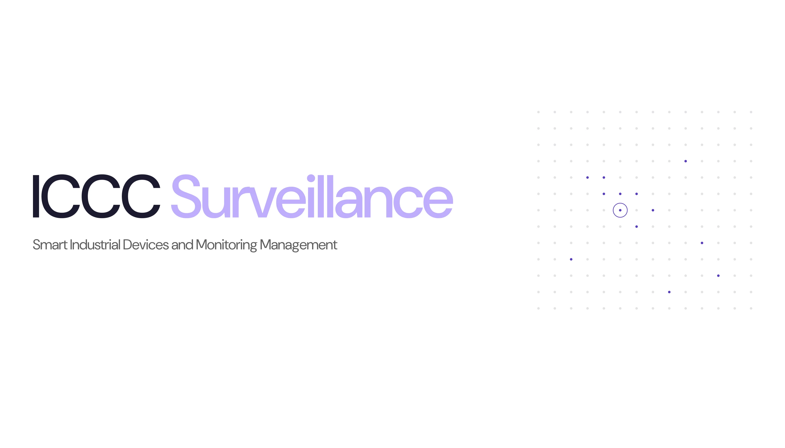
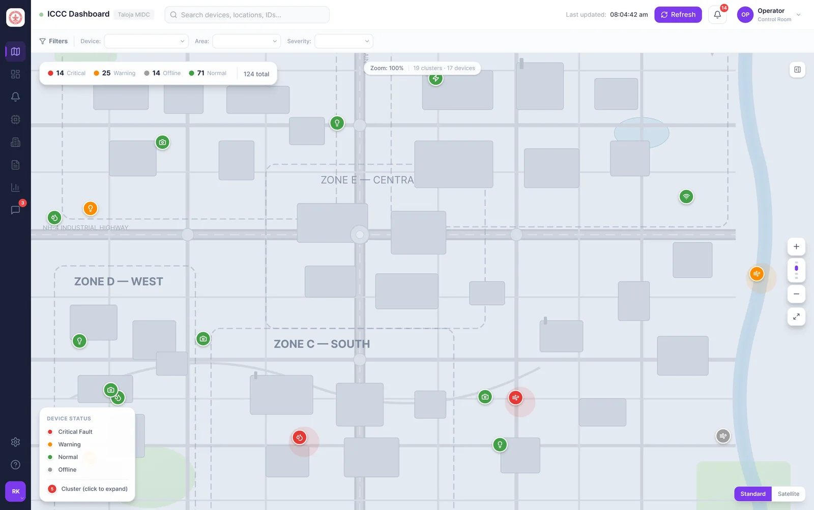
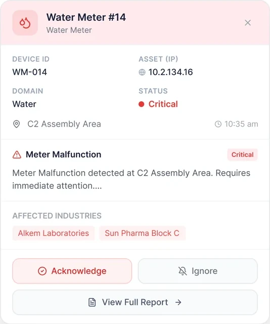
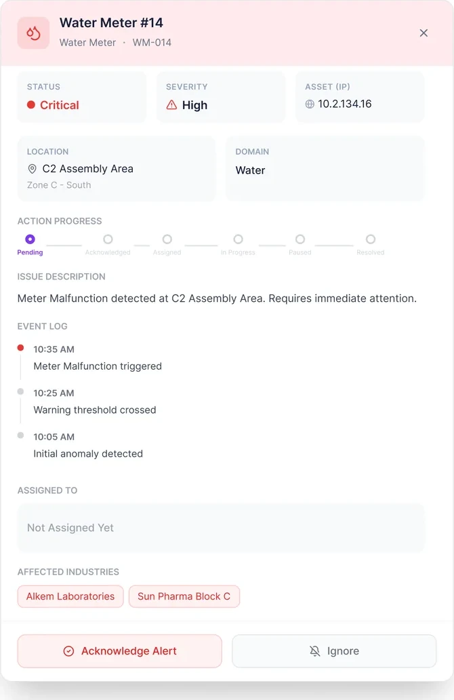

MIDC, the Maharashtra Industrial Development Corporation, runs the state’s industrial estates. Its Integrated Command and Control Centre (ICCC) at Taloja watches the whole estate on a single dashboard.
Cameras, smart poles, street lights, sensors and water meters all report to it. Checking an alert, sending a field team and keeping the record all happened by hand, over WhatsApp and a shared sheet filled in at the end of each shift.
See an alert, check it, send someone, close it. Every screen shortens one of those steps.
Alerts stay pinned on it, devices are coloured by status, and crowded areas fold into numbered clusters.

Acknowledge or ignore it from the card. The full report adds the event log and a progress timeline.


Escalating, assigning and messaging used to happen outside the dashboard. Now each has its own screen.
We counted the bits of information an operator has to keep in mind to handle alerts, before and after.
From the live map to tickets and escalation. Jump to any part.
The research, the models and every slide of the case study, on one page.